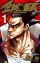
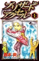
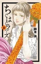

Nakaba Suzuki
Nakaba Suzuki (鈴木央, Suzuki Nakaba?), nacida el 8 de febrero de 1977 en Sukagawa, Fukushima, Japón, es una mangaka japonesa, y la autora de Nanatsu no Taizai. Trabaja sin asistentes, con su esposa ayudándolo en algunas ocasiones. En su carrera, ha publicado series en las cuatro revistas principales: Shueisha's Weekly Shōnen Jump, Shogakukan's Weekly Shōnen Sunday, Kodansha's Weekly Shōnen Magazine y Akita Shoten's Weekly Shōnen Champion.
Fondo
Hizo su debut en 1994 con un oneshot llamado Revenge, por el que recibió una mención honorífica, Hop☆Step (ホップ☆ステップ). En 1996 publicó otra secuela oneshot de Revenge en Weekly Shonen Jump Issue 46, llamada Savage. Su siguiente oneshot fue publicado en Akamaru Jump 1998 Winter Issue, llamado Taiyō no Omo (太陽の主), que también fue recogido más tarde en el segundo volumen de Rising Impact.
Su primera serie, se llamó Rising Impact en Weekly Shonen Jump de 1998-52 a 2002-12 Issue, abarcando un total de 17 volúmenes. La serie se suspendió en 1999, pero después de las solicitudes de los lectores, se reanudó en 2002, cuando terminó de nuevo. La serie cuenta una historia sobre un niño llamado Gawain, que vive en una zona montañosa y ama el béisbol, pero se interesa por el golf. En 2002, comenzó una nueva serie llamada Ultra Red en la edición 2002-45. El manga era una historia sobre luchadores, que se cortó en 2003, después de sólo 4 volúmenes.
Su siguiente serie Boku to Kimi no Aida Ni (僕と君の間に) comenzó en Ultra Jump en 2004, y continuó hasta 2006 y abarcó 3 volúmenes. Mientras se publicaba la serie, publicó un oneshot llamado Memory of Moon en la edición 2004-14-15 de Weekly Young Jump. Más tarde en el mismo año, publicó otro oneshot en IKKI March Issue, llamado Go! ¡¡Ruptura!! (ゴー!ブレイクスルー!!). Además de eso, publicó otro oneshot en el mismo año, llamado Blizzard Axel (ブリザードアクセル), que fue publicado en la edición 2004-28 de Weekly Shonen Sunday.
El último oneshot se convirtió en una serie en 2005, mientras todavía estaba trabajando en Boku to Kimi no Aida Ni. La serie Blizzard Axel se emitió desde la edición 2005-15 hasta la edición 2007-27 de Weekly Shonen Sunday, abarcando 11 volúmenes y contando la historia de un niño que se interesa en el patinaje.
Su siguiente trabajo, Kongou Banchou (金剛番長), comenzó a ser serializado en la edición 2007-47 de Weekly Shonen Sunday, y terminó en la edición 2010-15, abarcando 12 volúmenes. Contaba la historia de un "banchou", que salva a Japón de la destrucción. En los Ultra Jump Issues de enero y febrero de 2010, lanzó un oneshot de dos partes llamado Mayoe Kohitsuji-tachi! (迷え子羊たち!). Otro oneshot llamado Cowgirl tai Soratobu Enban (カウガール対空飛ぶ円盤) fue publicado el mismo año en la edición de octubre de Sunday GX 2010.
  En 2011, lanzó un disparo de dos partes llamado Chiguhagu Lovers (ちぐはぐラバーズ), que fue publicado en las ediciones 2011-20 y 2011-21 de Weekly Shonen Champion. Chiguhagu Lovers se convirtió en una serie corta en la misma revista, que se extendió desde 2012-15 hasta 2012-30 y abarcó 2 volúmenes, y contó la historia de dos amigos de la infancia de un dojo de kendo.
Poco después de que Chiguhagu Lovers terminara, publicó un oneshot llamado Nanatsu no Taizai (七つの大罪) en la edición 2011-52 de la revista Weekly Shonen. El oneshot se convirtió posteriormente en una serie del mismo nombre en la misma revista en 2012, y comenzó su serialización en la edición 2012-45.